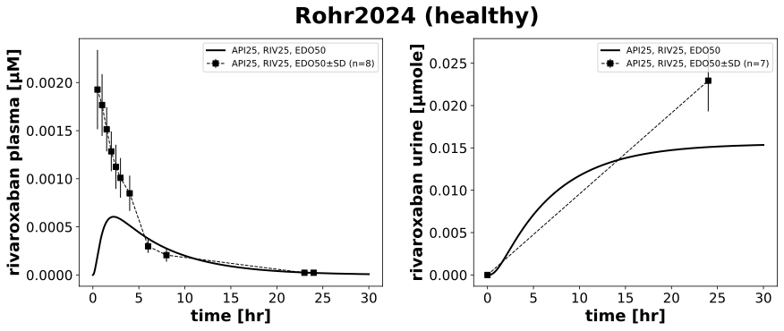

|  |
../../../../experiments/studies/rohr2024.py
from typing import Dict
from sbmlsim.data import DataSet, load_pkdb_dataframe
from sbmlsim.fit import FitMapping, FitData
from sbmlutils.console import console
from pkdb_models.models import rivaroxaban
from pkdb_models.models.rivaroxaban.experiments.base_experiment import (
RivaroxabanSimulationExperiment,
)
from pkdb_models.models.rivaroxaban.experiments.metadata import Tissue, Route, Dosing, ApplicationForm, Health, Health, \
Fasting, RivaroxabanMappingMetaData, Coadministration
from sbmlsim.plot import Axis, Figure
from sbmlsim.simulation import Timecourse, TimecourseSim
from pkdb_models.models.rivaroxaban.helpers import run_experiments
class Rohr2024(RivaroxabanSimulationExperiment):
"""Simulation experiment of Rohr2024."""
colors = {
"API25, RIV25, EDO50": "black",
# "API25, RIV25, EDO50, RITx5": "tab:blue",
}
labels = {
"API25, RIV25, EDO50": "RIV25",
# "API25, RIV25, EDO50, RITx5": "RIV25, RITx5",
}
interventions = list(colors.keys())
dose = 0.025 # μg
infos_pk = {
"[Cve_riv]": "rivaroxaban",
"Aurine_riv": "rivaroxaban_urine"
}
def datasets(self) -> Dict[str, DataSet]:
dsets = {}
for fig_id in ["Fig2", "Tab1A"]:
df = load_pkdb_dataframe(f"{self.sid}_{fig_id}", data_path=self.data_path)
for label, df_label in df.groupby("label"):
dset = DataSet.from_df(df_label, self.ureg)
if label.startswith("rivaroxaban") and "urine" not in label:
dset.unit_conversion("mean", 1 / self.Mr.riv)
dsets[label] = dset
return dsets
def simulations(self) -> Dict[str, TimecourseSim]:
Q_ = self.Q_
tcsims = {}
for intervention in self.interventions:
dose = self.dose
tcsims[f"{intervention}"] = TimecourseSim(
[Timecourse(
start=0,
end=30 * 60, # [min]
steps=500,
changes={
**self.default_changes(),
"PODOSE_riv": Q_(dose, "mg"),
},
)]
)
return tcsims
def fit_mappings(self) -> Dict[str, FitMapping]:
mappings = {}
for intervention in self.interventions:
# PK
for ks, sid in enumerate(self.infos_pk):
name = self.infos_pk[sid]
mappings[f"fm_{name}_{intervention}"] = FitMapping(
self,
reference=FitData(
self,
dataset=f"{name}_{intervention}",
xid="time",
yid="mean",
yid_sd="mean_sd",
count="count",
),
observable=FitData(
self, task=f"task_{intervention}", xid="time", yid=sid,
),
metadata=RivaroxabanMappingMetaData(
tissue=Tissue.URINE if "urine" in name else Tissue.PLASMA,
route=Route.PO,
application_form=ApplicationForm.TABLET,
dosing= Dosing.MULTIPLE,
health=Health.HEALTHY,
fasting=Fasting.FASTED,
coadministration=Coadministration.RITONAVIR if "RIT" in intervention else Coadministration.NONE,
),
)
return mappings
def figures(self) -> Dict[str, Figure]:
return {
**self.figure_pk()
}
def figure_pk(self) -> Dict[str, Figure]:
fig = Figure(
experiment=self,
sid="Fig1",
num_cols= 2,
name=f"{self.__class__.__name__} (healthy)",
)
plots = fig.create_plots(
xaxis=Axis(self.label_time, unit=self.unit_time), legend=True
)
plots[0].set_yaxis(self.label_riv_plasma, unit=self.unit_riv)
plots[1].set_yaxis(self.label_riv_urine, unit=self.unit_riv_urine)
for intervention in self.interventions:
for ks, sid in enumerate(self.infos_pk):
name = self.infos_pk[sid]
# simulation
plots[ks].add_data(
task=f"task_{intervention}",
xid="time",
yid=sid,
label=intervention,
color=self.colors[intervention],
)
# data
plots[ks].add_data(
dataset=f"{name}_{intervention}",
xid="time",
yid="mean",
yid_sd= "mean_sd",
count="count",
label=intervention,
color=self.colors[intervention],
)
return {
fig.sid: fig
}
if __name__ == "__main__":
out = rivaroxaban.RESULTS_PATH_SIMULATION / Rohr2024.__name__
out.mkdir(parents=True, exist_ok=True)
run_experiments(Rohr2024, output_dir=Rohr2024.__name__)
{kind=link}